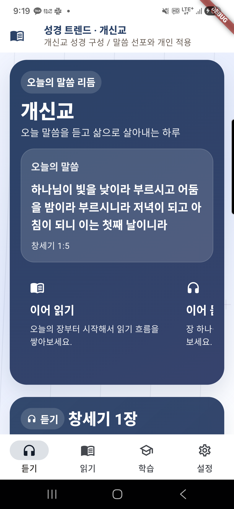
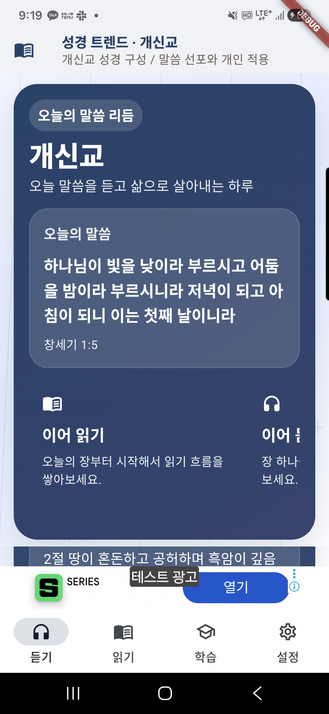

홈과 말씀 흐름읽기, 듣기, 공부, 설정으로 바로 이동합니다.
Home
성경은 여러 언어의 성경 읽기, 장별 오디오, 인물·주제 공부, 기도와 위젯을 기기 중심으로 정리하는 성경 앱입니다.




언어와 번역본을 선택하고 최근 읽던 위치를 이어갑니다.
오디오 재생과 이어 듣기 흐름을 앱 안에서 관리합니다.
성경 인물, 주제, 질문과 답변을 공부 흐름으로 정리합니다.
기도 안내, 알림, 위젯으로 말씀을 생활 흐름 가까이에 둡니다.
언어, 번역본, 최근 읽기·듣기 위치, 북마크, 알림 설정은 기본적으로 사용자의 기기 안에서 관리됩니다.